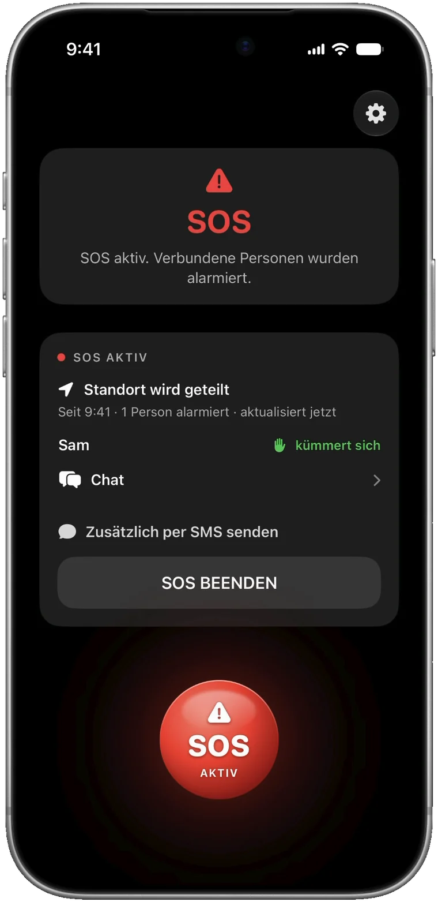
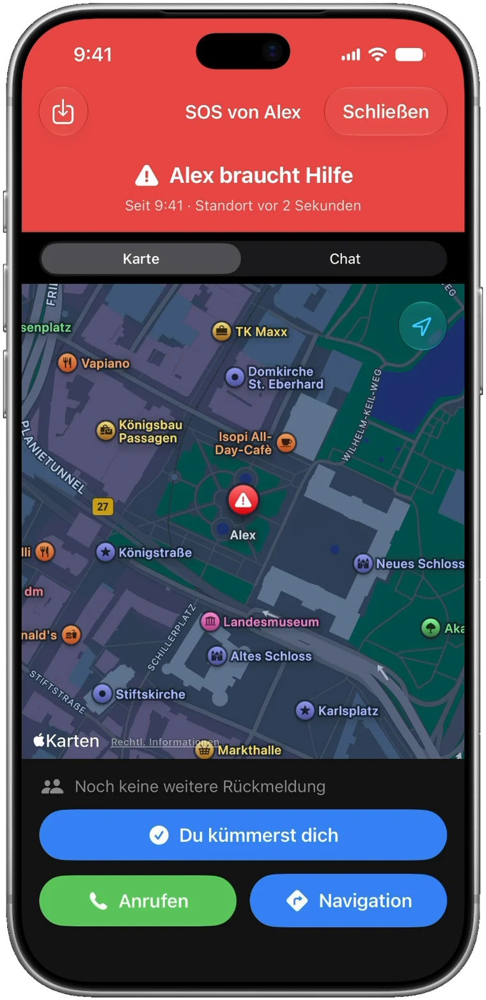
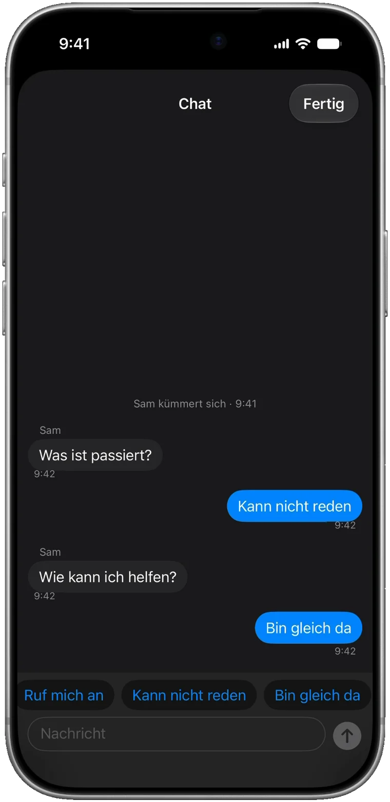
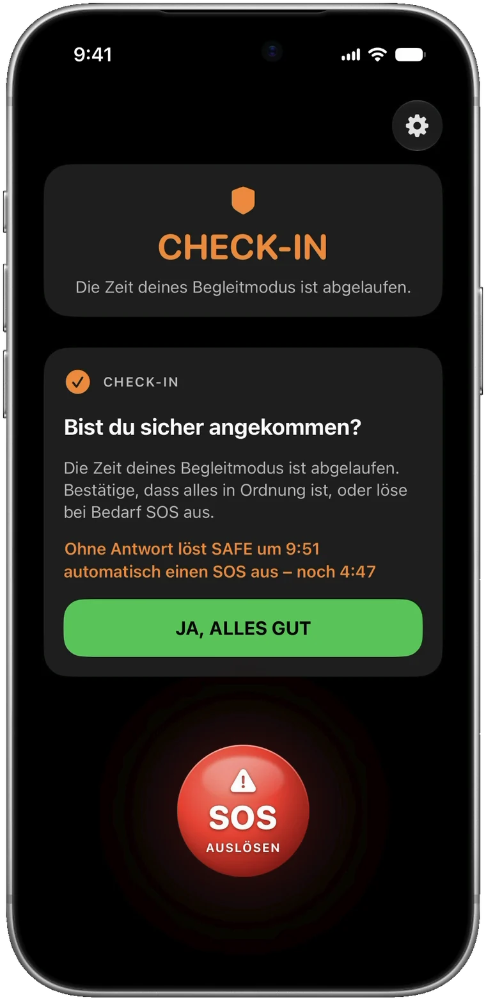
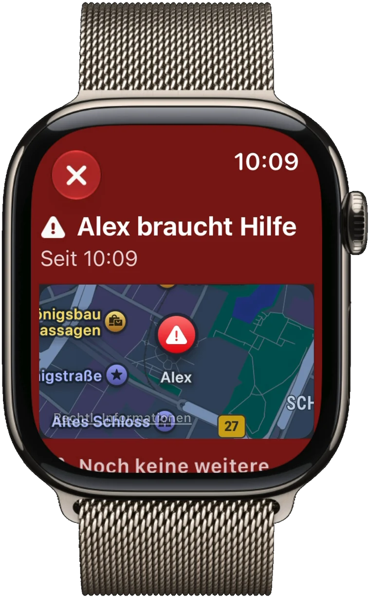
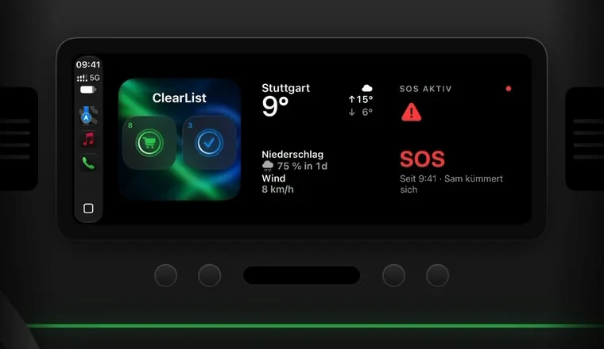

SOS
Tippen, bestätigen – deine Vertrauenspersonen werden sofort alarmiert und sehen deinen Standort live.
DEIN BEGLEITMODUS
Ein Tipp auf SOS – und deine Vertrauenspersonen sehen dich live auf der Karte. Auf dem Heimweg begleitet dich SAFE, bis du sicher angekommen bist. Auf iPhone, Apple Watch und in CarPlay.
SO FUNKTIONIERT SAFE
SOS, Helfer, Chat, Begleitmodus, Apple Watch und CarPlay – der Rundgang aus der App in gut zwei Minuten.
Den Rundgang findest du auch in der App unter Einstellungen.
WAS SAFE KANN
Verbundene Personen bekommen deinen Alarm sofort – mit Live-Standort, auch wenn ihr iPhone stumm ist. Kontakte ohne SAFE erreichst du per SMS.

Tippen, bestätigen – deine Vertrauenspersonen werden sofort alarmiert und sehen deinen Standort live.

Deine Helfer sehen dich auf der Karte. Du siehst, wer deinen Alarm gesehen hat und wer kommt.

Schreib mit deinen Helfern – Ende-zu-Ende-verschlüsselt und mit Schnellantworten, wenn du nicht reden kannst.

Mit Dauer oder ohne Zeitlimit. Bleibt nach Ablauf deine Antwort aus, löst SAFE nach 5 Minuten einen SOS aus.

SOS 3 Sekunden halten – mit Mobilfunk-Watch auch ohne iPhone. Alarme erreichen dich am Handgelenk.

Dein Status im Auto, auf dem Home- und Sperrbildschirm – mit Restzeit, Check-in und SOS.
DATENSCHUTZ
SAFE hat keinen eigenen Server und kein eigenes Konto – dein Apple Account genügt. Was du teilst, ist nur für deine Vertrauenspersonen bestimmt.
Standort, Nachrichten und Chat gehen verschlüsselt über Apples iCloud – lesen können sie nur deine Vertrauenspersonen, weder Apple noch wir.
Nach dem Ende eines SOS oder einer Begleitung löscht SAFE die Daten aus der iCloud, den Chat nach 24 Stunden. Der Verlauf auf dem Gerät wird nach 15 Tagen gelöscht.
Verbindungen, Schlüssel und Verlauf bleiben auf deinem iPhone und kommen in kein Backup. Auf Wunsch mit Face ID geschützt.